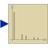

RealFFTSampling and FFT of input u |

|
Information
This information is part of the Modelica Standard Library maintained by the Modelica Association.
This block samples the input signal, calculates the Fast Fourier Transform by function Math.realFFT, and (when simulation terminates) writes the output to result file resultFileName by function Math.realFFTwriteToFile.
The number of sampling points as well as the samplePeriod is calculated from desired maximum frequency f_max and frequency resolution f_res.
Note
The user has to take care that enough points can be sampled before the simulation ends: startTime + (ns - 1)*samplePeriod <= stopTime.
The result file is written as mat, first column = frequency, second column = amplitudes, third column = phases. The frequency points are separated by rows with amplitude and phase = 0, so one can plot the result directly as frequency lines.
Parameters (7)
| samplePeriod |
Value: 1 / (2 * f_res * div(ns, 2)) Type: Time (s) Description: Sample period of component |
|---|---|
| startTime |
Value: 0 Type: Time (s) Description: First sample time instant |
| f_max |
Value: Type: Frequency (Hz) Description: Maximum frequency of interest |
| f_res |
Value: Type: Frequency (Hz) Description: Frequency resolution |
| ns |
Value: Modelica.Math.FastFourierTransform.realFFTsamplePoints(f_max, f_res, f_max_factor = 5) Type: Integer Description: Number of samples |
| nf |
Value: max(1, min(integer(ceil(f_max / f_res)) + 1, div(ns, 2))) Type: Integer Description: Number of frequency points |
| resultFileName |
Value: "realFFT.mat" Type: String Description: Result file: f, abs, arg |
Outputs (3)
| sampleTrigger |
Type: Boolean Description: True, if sample time instant |
|---|---|
| firstTrigger |
Type: Boolean Description: Rising edge signals first sample instant |
| info |
Type: Integer Description: Information flag from FFT computation |
Connectors (1)
| u |
Type: RealInput |
|---|
Used in Examples (2)
|
Modelica.Blocks.Examples
Example of FFT block |
|
|
Modelica.Blocks.Examples
Example of FFT block |